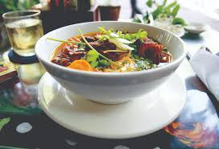
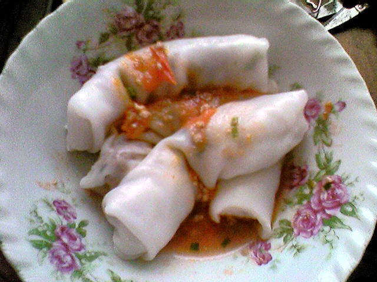
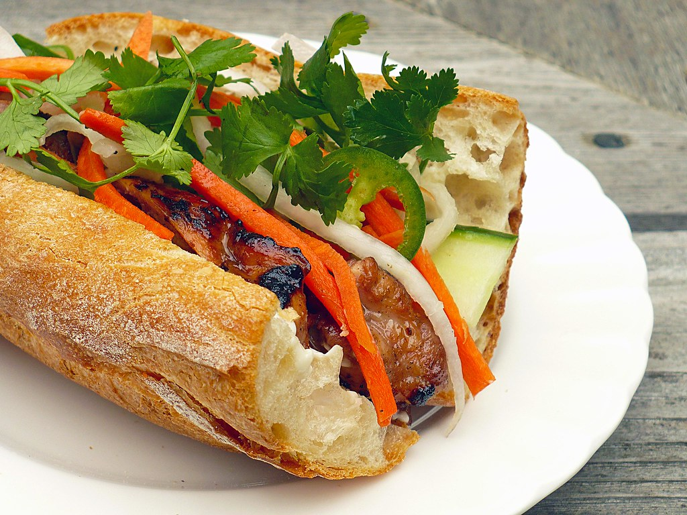
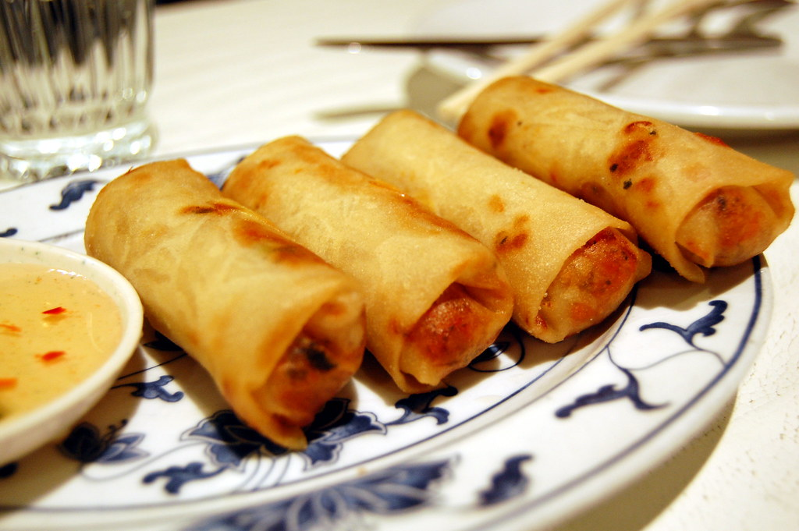

Culture
Vietnam's culture is a mix of traditions from French, Chinese and American traditions. In the mid-19th Century Vietnam was colonised by the French where it was once known as a 'dynasty' within the region of Southeast Asia.
Additional Facts
- The main religion is Budhism where the 'Buddha' is known to be the beholder of the relgion. There are bound to be buddha statues while travelling.
- Motorbikes are very popular. There are over 45 million motorcycles registered in Vietnam today.
- Vietnamese is the official language used however there are many different tones. Vietnam uses the Roman alphabet unlike many oher asian countries.
- Ha Long Bay, Thien Mu Pagona in Hue and Hoan Kiem Lake in Hanoi are 3 very major tourist attractions regioning all over Vietnam.
Food

Pho (noodles)

Banh Cuon

Banh Mi

Spring Rolls